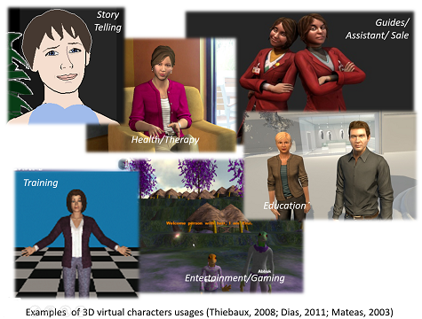
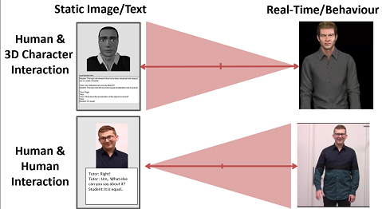
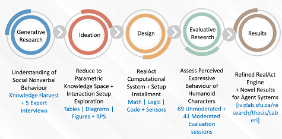
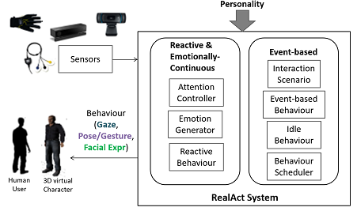
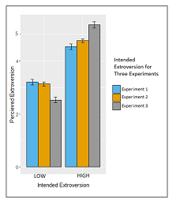
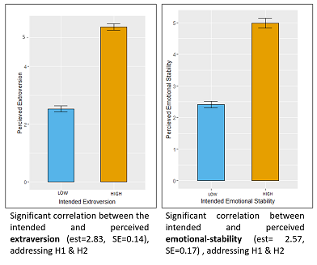

Example of UXR: Evaluation of a realtime emotional virtual human
For more industry examples, please email me at 'maryamsab@gmail.com'. Virtual humans are 3D characters of humans used in several applications.
They are used as sales reps, trainers, or in games.
Problem, Scope, & Objective
Although many systems has been designed for static text based bots, creating virtul humans that maintain their beleivability and realistic behavior is a challange. For that to work the system for the virtual human should be responsive to the environment and users: sensors, reactive and continuous behaviour, follow the scenario of interaction, and show consistent behaviour.
I focused the scope to nonverbal upper body behaviour for the character, during the turn-taking real-time interaction of the virtual agent and humans, where scoping the human-like characters with distinctive personality (mainly extroversion & emotional stability personality traits). The goal of the research project was to explore, design, develop, and evaluate a computational framework for affective i.e. emotional and personality based behavior of virtual humans (RealAct).
Research Process
I started with knowledge harvest in the existing frameworks for affective behavior. The challange was to translate the soft psycological data to a paramatric space.
I then reduced that to a parametric space, mapping the Personality dimensions to different functionalities (behavior, emotional, & thinking). I created the impression of Extroversion and Emotional Stability.
Interactive Space for Evaluation
I designed a setup so users can intract with virtual humans and evaluate their personalinies.
I then did run a series of evaluative expriements.
Evaluation of the system
I evluated the system across 3 expriements, with 130 participants. In all the expriements users significantly recognized the created personalities.
 In the expriment 3, for instance, 41 participants intracted with the virtual human. They all took the personality questionnaire (TIPI) to evaluate the personality of the virtual human. For both Extroversion and Emotional Stability they correctly recognized the intended impression.